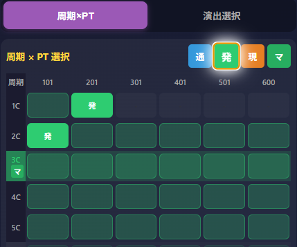
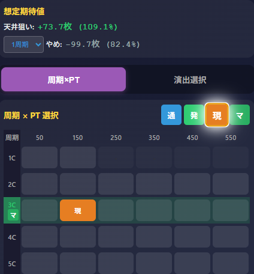
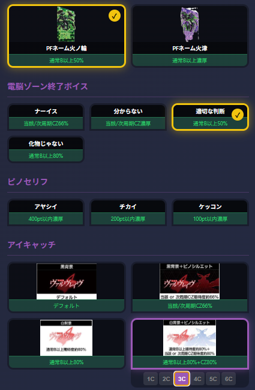
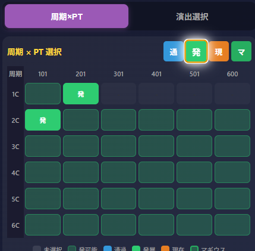
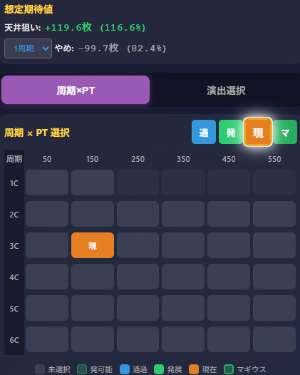

【特殊A狙い】革命機ヴァルヴレイヴ2
特殊A狙い目検索ツール
1 CZスルー回数
未選択解析値期待値算出ツールの具体的な使い方「特殊A狙いと解析値期待値算出ツールの実践的な使用方法」を参考にしてください
条件別特殊A狙い
はじめに
一般的なミミズ狙いの狙い方は以下の通りです：
- 9連以下の上位AT後や下位AT後を狙う
- 2〜3周期目の100pt・200ptゾーンでCZ当選を期待
- ボーナスかラッシュ当選で状態終了
しかし、集計値とは別に実践で得られた239件のサンプルデータを集計・分析した結果、これはミミズというよりも特殊Aである可能性が浮かび上がりました。
特殊Aの特徴
| 項目 | 内容 |
|---|---|
| 継続性 | 終日継続ではない。ボーナスかラッシュ当選で終了 |
| 当選傾向 | 2周期目200ptまでに当選か、発展し非当選の場合は3周期目の100ptまでにCZにかなり当選しやすい。さらにボーナスかラッシュ当選までループする可能性がかなり高い |
| 判別方法 | B以上示唆が出ると特殊A否定の可能性が高い（白背景、化物じゃないセリフなど） |
[0スルー時]データから見えた特殊Aの特徴
モードB以上示唆と当選率の逆転現象
| 演出 | 解析上の示唆 | 実際の当選率 |
|---|---|---|
| 化け物じゃない | 通常B以上 80% | 0%（15件中0件） |
| 白背景 | 通常B以上 80% | 25%（4件中1件） |
| 適切な判断 | 通常B以上 50% | 10%（10件中1件） |
一方で、モード示唆ではない演出の当選率は：
| 演出 | 示唆内容 | 実際の当選率 |
|---|---|---|
 （マギウス）2周目出現 （マギウス）2周目出現 |
CZ示唆 | 73%（11件中8件） |
| ナーイス | CZ示唆 | 52%（23件中12件） |
| 黒ピノステ | CZ示唆 | 67%（3件中2件） |
０スルー時B以上示唆が出ると当選率が激減し、CZ示唆演出だと高当選率を維持している。
「特殊A」の存在仮説
この矛盾を説明するため、以下の仮説を立てました。
論理展開
【事実1】0スルー時B以上示唆出現時 → 2周200以内の発展/当選率と3周100の当選率が著しく低下 【事実2】解析値の通常Aでは、集計上の高当選率パターンを説明できない 【事実3】特殊Aはボーナス当選またはラッシュ当選までループする可能性が非常に高い（実践上85%以上継続） 【結論】通常Aとは別の未発表モード「特殊A」が存在すると推測
つまり、これまで「ミミズ」と呼ばれていた優遇状態の正体は特殊Aモードであり、モードB以上とは全く別の抽選体系を持つと考えられます。
特殊A移行しやすい条件（優先度順）
| 優先度 | 条件 | 集計根拠 |
|---|---|---|
| ★★★ | 9連以下の超革命ラッシュ後 | 上位AT後41%、差枚あり45%超 |
| ★★☆ | 革命ラッシュ後（1-3連） | 下位AT後33%、差枚あり44% |
| ★☆☆ | 革命ボーナス後 | BB後33%、差枚なし25% |
【ヴヴヴ2】1回前、2回前履歴別の特殊A優遇区間特徴
1. 10連以上の上位AT後は「平均TY優遇」「特殊A冷遇」
10連以上の上位AT終了後は、内部状態がリセットされ、基本的に特殊A優遇状態への移行が制限される区間に入ります。
原則：特殊A状態へ移行しにくい
10連以上の上位AT後は、次回・次々回でのAT平均出玉（性能）は優遇されますが、「特殊Aの当たりやすさ（101-250Gでの当選率）」は著しく低下します。
- 10連以上直後の挙動: AT直撃やボーナスからの繋がりやすさはありますが、早いG数での当選率は低くなります。
- 前々回が10連以上の場合: 前回が平均TY優遇区間であることが多いため履歴に関わらず特殊Aに移行しにくい。
結論：「10連以上から数えて3区間目」
最も間違いやすいのが、履歴上で「10連以上後」→「5-9上位後、下位AT後」→「現在（3区間目）」となっているケースです。
「前回が5〜9連の上位ATなら特殊A優遇ではないか？」 通常であればその通りですが、前々回が10連以上の場合は例外です。
| 履歴パターン（前々回 → 前回） | 判定 |
|---|---|
| 10連以上 → 5〜9連上位AT |  狙えない 狙えない |
| 10連以上 → 決戦・ボナ・下位 | 狙えない |
たとえ前回が「本来なら熱い5〜9連後」であっても、その前が10連以上であれば冷遇期間内であり、特殊Aのような高当選率は期待できません。
2. 平均TY優遇区間から特殊A優遇区間への復帰条件
では、一度特殊A冷遇状態に入った後、いつになれば再び美味しい「特殊A」の状態に戻るのでしょうか？ その鍵は「5〜9連の上位AT」を複数回挟むことにあります。
復帰のサイン：同一有利区間内で5〜9連状態を2回以上繰り返す
履歴上で同一有利区間内で5〜9連の上位ATが2回以上繰り返されるとその後も特殊A優遇状態に突入する傾向があります。
狙い目：特殊Aへ復帰パターン
以下の履歴フローを辿った台は、高い期待値を持ちます。
例：
- 3回前：10連以上の上位AT
- 前々回：5〜9連の上位AT（ここで冷遇解除の準備）
- 前回：5〜9連の上位AT（2回目の9連上位後状態で特殊Aに復帰）
この「3回前が10連以上」かつ「直近2回が5〜9連」のパターンは、見つけたら最優先で確保すべきお宝台です。
例:
- 4回前:10連以上の上位AT
- 3回前:上位AT9連(上位5~9連1回目)
- 2回前:下位AT
- 1回前:上位AT9連(上位5~9連2回目)
これも上位5~9連2回目で特殊A優遇区間の可能性が高いです。
3. 設定変更後の特殊A優遇区間まとめ
朝イチ設定変更後の挙動も、履歴によって明暗がはっきりと分かれます。
狙い目：初回5〜9連上位ATの後
設定変更後、最初のATが5〜9連で終了した場合、その次は特殊Aがかなり優遇され非常に美味しい区間となります。
- 出玉率：110%以上
- 特徴：平均出玉が高く、安定してプラスになりやすい。
危険：2区間目への過度な期待
設定変更後、初回が革命ボーナスや下位ATで終わった場合、その次の区間（2区間目）は狙い目ではありません。
- 設定変更 → 革命ボーナス後：100~150G当選率が30%
- 設定変更 → 下位AT後：100~150G当選率が30%
特殊Aで当選しにくいため、ねらわないようにします。
まとめ：統合・立ち回りチェックリスト
ホールで履歴・データカウンターを見る際は、以下の優先順位で判断してください。
積極的に狙うパターン
- 設定変更後1回目の5〜9連上位AT後：特殊Aがかなり優遇される
- 強いパターン：[5〜9連] → [5〜9連] 後の台は特殊Aが優遇される
- 基本の特殊A：履歴に10連以上がなく、前回が5〜9連上位ATの台は優先的に狙う
避けるパターン
- 3区間目の罠：[10連以上] → [何か] の後の台（まだ冷遇内）3回目は特殊Aの冷遇区間
- 朝イチの罠：[設定変更] → [革命ボナ/下位AT] の後の台
鉄則 「10連以上したら、その後２回上位5~9連後がないと特殊A優遇にならない傾向」
特殊A否定条件（打ってはいけない）
- 設定変更後2回目区間が上位以外
- 決戦ボーナス後
- 10連以上の上位AT後
演出による特殊A判別
特殊A狙い(2周200,3周100以内)中続行可能演出
| 演出 | 当選率 | 解釈 |
|---|---|---|
| （マギウス）2周目出現 |
73% | 特殊Aの可能性が高い |
| ナーイス | 52% | 特殊Aの可能性がまだ高い |
| 黒ピノステ | 67% | 特殊Aの可能性がまだ高い |
| 自分で自分が | 33% | 少し弱いが現時点では続行 |
| v3/v5 | 48% | 現時点では続行 |
特殊A否定の可能性が高い(周期の進み具合でやめ判断)
| 演出 | 示唆内容 | 当選率 | 判断 |
|---|---|---|---|
| 化け物じゃない | B以上80% | 0% | 特殊A否定の可能性が高い |
| 白背景（ピノなし） | B以上80% | 25% | 特殊A否定の可能性が高い |
| 適切な判断 | B以上50% | 10% | 注意 |
| 火の輪 | B以上50% | 33% | 注意 |
白ピノ（白背景+ピノシルエット）について
| 示唆内容 | 集計当選率 |
|---|---|
| B以上80% + 当該or次周期CZ80% | 17%（18件中3件） |
特殊A否定の可能性が高いが、「当該or次周期CZ80%」は解析値でみると期待値がある場面が多い。
→ 周期の進行次第で狙える可能性あり
狙い目
※これは特殊Aの狙い目です。もし当選しない場合は滞在ptや出現演出をhttps://vvv2.suroschool.jpこちらのツールに反映させ、続行するかも判断してください。
レベルでうち分け
状態をレベル1〜4の4段階にわけ特殊Aの当選を狙う
レベル別の立ち回り
レベル1（低期待度）
| 項目 | 内容 |
|---|---|
| 打ち出し | 2周目0pt〜 |
| やめ時 | 2周目100発展なし → やめ |
| 継続条件 | 2周目100発展あり → 3周目100発展確認やめ |
レベル2（中期待度）
| 項目 | 内容 |
|---|---|
| 打ち出し | 2周目0pt〜 |
| やめ時 | 2周目200まで発展なし → やめ |
| 継続条件 | 2周目200まで発展あり → 3周目100発展確認やめ |
レベル3（高期待度）
| 項目 | 内容 |
|---|---|
| 打ち出し | 1周目100pt〜 |
| やめ時 | 2周目200まで発展なし → やめ |
| 継続条件 | 2周目200まで発展あり → 3周目100発展確認やめ |
レベル4（最高期待度）
| 項目 | 内容 |
|---|---|
| 打ち出し | 1周目0pt〜 |
| やめ時 | 2周目200まで発展なし → やめ |
| 継続条件 | 2周目200まで発展あり → 3周目100発展確認まで続行 |
条件別レベル表
差枚あり（+1〜+1000枚）
| 条件 | レベル | 打ち出し |
|---|---|---|
| 上位AT後 | 3 | 1周目100pt〜 |
| 下位AT後 | 2 | 2周目0pt〜 |
| BB後 | 1 | 2周目0pt〜 |
差枚あり（+1000枚以上）
※1000〜2200枚の範囲でラッシュに入っていない台は切断していない可能性が高い （下位でも切断の可能性は捨て切れないが、現時点では切断していないと仮定）
| 条件 | レベル | 打ち出し |
|---|---|---|
| 切断なしと推測 | 3 | 1周目0pt〜 |
差枚なし
| 条件 | レベル | 打ち出し |
|---|---|---|
| 上位AT後 | 2 | 2周目0pt〜 |
| 下位AT後 | 1 | 2周目0pt〜 |
| BB後 | 1 | 2周目0pt〜 |
1スルー目の継続条件
以下のすべてを満たす場合、1スルー目レベル4で続行：
- 自力以外のCZ当選
- 特殊A否定演出が出ていない
- ボーナスまたはラッシュに当選していない
→ 上記を満たせばレベル4で継続
データ履歴から見る1スルー目以降の狙い方
0スルー目で当選周期が確認できない場合
差枚に関係なく、前回のデータ履歴（CZ当選G数）で判断
超革命ラッシュ後（9連以下）
| 前回CZ当選G数 | レベル | 打ち出し |
|---|---|---|
| 140-220G | 4 | 1周目0pt〜 |
| 100-140G / 220-250G | 3 | 1周目100pt〜 |
革命ラッシュ後（1-3連）
| 前回CZ当選G数 | レベル | 打ち出し |
|---|---|---|
| 150-200G | 4 | 1周目0pt〜 |
| 100-150G / 200-250G | 3 | 1周目100pt〜 |
革命ボーナス後
| 前回CZ当選G数 | レベル | 打ち出し |
|---|---|---|
| 150-200G | 3 | 1周目100pt〜 |
| 100-150G / 200-250G | 1 | 2周目0pt〜 |
周期別CZ当選率
| ポイント | 当選率 | 評価 |
|---|---|---|
| 2周100 | 18.4% | ★★★ |
| 2周200 | 7.9% | ★☆☆ |
| 3周100 | 17.0% | ★★☆ |
| 3周200 | 5.5% | ★☆☆ |
やめ時
レベル別やめ時
【レベル1】 2周目100発展なし → やめ 2周目100発展あり → 3周目100発展確認やめ 【レベル2】 2周目200まで発展なし → やめ 2周目200まで発展あり → 3周目100発展確認やめ 【レベル3】 1周目100pt〜打ち出し 2周目200まで発展なし → やめ 2周目200まで発展あり → 3周目100発展確認やめ 【レベル4】 1周目0pt〜打ち出し 2周目200まで発展なし → やめ 2周目200まで発展あり → 3周目100発展確認まで続行
共通やめ時
特殊A否定演出出現 → 撤退検討 白ピノ出現 → 特殊A否定だが、周期の進行次第で続行可 CZ当選→ボーナス/ラッシュ当選 → 引き戻し確認して続行状況でなければやめ CZ当選→スルー → 特殊Ａ当選なら1スルー目続行
まとめ
従来の「ミミズ狙い」は、データ分析の結果「特殊A狙い」として再定義します。
ポイント
- モードB(80%)以上示唆 ＝ 特殊A否定の可能性が高い → 撤退検討
- レベル制（1〜4）で打ち出し・やめ時を明確化
- 差枚ありは期待度UP、特に+1000枚以上は最優先
- 1スルー目以降は前回CZ当選G数でレベル判定
早見表（0スルー目）
| 状況 | レベル | 打ち出し |
|---|---|---|
| 差枚あり+上位AT後 | 3 | 1周目100pt〜 |
| 差枚あり+下位AT後 | 2 | 2周目0pt〜 |
| 差枚あり+BB後 | 1 | 2周目0pt〜 |
| 差枚+1000以上（切断なし推測） | 3 | 1周目0pt〜 |
| 差枚なし+上位AT後 | 2 | 2周目0pt〜 |
| 差枚なし+下位AT後 | 1 | 2周目0pt〜 |
| 差枚なし+BB後 | 1 | 2周目0pt〜 |
早見表（1スルー目以降・前回CZ当選G数）
| 条件 | CZ当選G数 | レベル |
|---|---|---|
| 超革命後（9連以下） | 140-220G | 4 |
| 超革命後（9連以下） | 100-140G / 220-250G | 3 |
| 革命ラッシュ後（1-3連） | 150-200G | 4 |
| 革命ラッシュ後（1-3連） | 100-150G / 200-250G | 3 |
| 革命ボーナス後 | 150-200G | 3 |
| 革命ボーナス後 | 100-150G / 200-250G | 1 |
参考ソース
集計データ
- 実践サンプル：全239件の実戦記録
- 集計サマリー：条件別当選率
- 演出別分析：演出と当選率の相関
- 周期パターン分析：周期別CZ当選率
- 実戦結論：狙い目・やめ時まとめ
サンプル数詳細
全体
- 総サンプル数: 239件
- 当選: 87件
- 当選率: 36.4%
条件別（n=236）
| 条件 | サンプル数 | 当選 | 当選率 |
|---|---|---|---|
| 上位AT後 | 97 | 40 | 41% |
| 下位AT後 | 87 | 29 | 33% |
| BB後 | 52 | 17 | 33% |
| RB後 | 3 | 1 | 33%（参考） |
差枚あり（n=49）
| 条件 | サンプル数 | 当選 | 当選率 |
|---|---|---|---|
| BB後+枚 | 8 | 6 | 75% |
| 下位AT後+枚 | 18 | 8 | 44% |
| 上位AT後+枚 | 23 | 8 | 35% |
演出別
| 演出 | サンプル数 | 当選 | 当選率 |
|---|---|---|---|
| （マギウス）2周目出現 |
11 | 8 | 73% |
| 黒ピノステ | 3 | 2 | 67% |
| ナーイス | 23 | 12 | 52% |
| v3/v5 | 23 | 11 | 48% |
| 黒ピノ | 11 | 4 | 36% |
| 火の輪 | 6 | 2 | 33% |
| 自分で自分が | 3 | 1 | 33% |
| （マギウス）3周目出現 |
21 | 5 | 24% |
| 白ピノ | 18 | 3 | 17% |
| 適切な判断 | 10 | 1 | 10% |
| 化け物じゃない | 15 | 0 | 0% |
周期別CZ当選率
| ポイント | サンプル数 | CZ当選 | 当選率 |
|---|---|---|---|
| 2周100 | 217 | 40 | 18.4% |
| 2周200 | 177 | 14 | 7.9% |
| 3周100 | 88 | 15 | 17.0% |
| 3周200 | 73 | 4 | 5.5% |
特殊A狙いと解析値期待値算出ツールの実践的な使用方法
「特殊A狙い」から「解析値ツール」を使った実戦的な立ち回り方について、具体的な実践例を交えて解説します。
1. 特殊A狙いの基本とツールの位置づけ
まずは、特殊A狙いの手順に従って特殊Aを狙います。
- 重要: 実践中に出現する示唆演出をメモするか、リアルタイムで解析値ツールに反映させてください。
 注意点：ツールの位置づけについて
注意点：ツールの位置づけについて
- 解析値期待値算出ツールは、あくまでも解析値ベースの期待値を算出するものです。
- このツールでは、特殊Aの期待値は算出されません。特殊Aは集計値から導かれた狙い目であり、ツールを使用するきっかけ作りと考えましょう。
2. 実践例1：周期と発展ポイントからの判断
下位AT終了後、特殊A狙いを実行し、情報を収集します。
| 周目 | ゲーム数 | 発展の有無 | マギウスの周期示唆 |
|---|---|---|---|
| 1周目 | 200p | 有 | 3 にマギウス |
| 2周目 | 100p | 有 | – |
| 3周目 | 100p | 無 | – |
特殊A狙いはここまでです。
ツールへの入力と判断
ここからはツールに現在の状況を入力して期待値を見ます。
これが1周200発展、2周100発展、3周にマギウスを選択している状態

次に現在周期とptを選択

期待値確認: 算出された期待値を確認します。この場合はCZ天井狙いで+73.7枚(109%)
判断: この期待値をみて打つか打たないかは個人の判断になりますが、106%あれば「CZを当てるまで打っても大丈夫そうなボーダー」になります。
3. 実践例2：示唆演出とスルーからの判断
複数の示唆演出を記録し、期待値を判断します。
| 周目 | 示唆演出 | ゲーム数 | 発展の有無 |
|---|---|---|---|
| 1周目 | 火の輪 | 200p | 有 |
| 2周目 | 適切な判断 | 100p | 有 |
| 3周目 | 白ピノ | 200p | 無 |
これもここまでで特殊A狙いが完了し、次に出た演出で解析値ツールに入力します。
ツールへの入力と判断
入力項目: 発展ポイント、示唆演出、現在のptなどをツールに入力します。火の輪と適切な判断はモード示唆で出現周期は大事ではないが、白ピノは出現周期を選択する必要があります。今回の場合は「白ピノが３周目に出現」なので白ピノを選択し3cを選択します。

その後「周期×pt」選択に戻り残りの情報を入力


期待値確認: 算出された期待値を確認します。
判断: このケースも、当てるまで106%を超えそうなのでCZまで打ち切りという流れになります。
まとめ
特殊A狙いで台を選んだ後、解析値期待値算出ツールを用いて客観的な情報（示唆、周期、pt）から期待値を算出し、より精度の高いヤメ時・続行の判断を行いましょう。